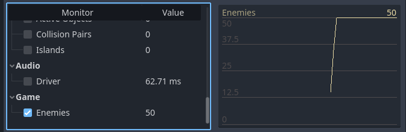

Custom performance monitors
Introduction
As explained in the Debugger panel documentation, Godot features a Debugger > Monitors bottom panel that allows tracking various values with graphs showing their evolution over time. The data for those graphs is sourced from the engine's Performance singleton.
Godot lets you declare custom values to be displayed in the Monitors tab. Example use cases for custom performance monitors include:
Displaying performance metrics that are specific to your project. For instance, in a voxel game, you could create a performance monitor to track the number of chunks that are loaded every second.
Displaying in-game metrics that are not strictly related to performance, but are still useful to graph for debugging purposes. For instance, you could track the number of enemies present in the game to make sure your spawning mechanic works as intended.
Creating a custom performance monitor
In this example, we'll create a custom performance monitor to track how many enemies are present in the currently running project.
The main scene features a Timer node with the following script attached:
extends Timer
func _ready():
# The slash delimiter is used to determine the category of the monitor.
# If there is no slash in the monitor name, a generic "Custom" category
# will be used instead.
Performance.add_custom_monitor("game/enemies", get_enemy_count)
timeout.connect(_on_timeout)
# Spawn 20 enemies per second.
wait_time = 0.05
start()
func _on_timeout():
var enemy = preload("res://enemy.tscn").instantiate()
get_parent().add_child(enemy)
# This function is called every time the performance monitor is queried
# (this occurs once per second in the editor, more if called manually).
# The function must return a number greater than or equal to 0 (int or float).
func get_enemy_count():
return get_tree().get_nodes_in_group("enemies").size()
The second parameter of Performance.add_custom_monitor is a Callable.
enemy.tscn is a scene with a Node2D root node and Timer child node. The
Node2D has the following script attached:
extends Node2D
func _ready():
add_to_group("enemies")
$Timer.timeout.connect(_on_timer_timeout)
# Despawn enemies 2.5 seconds after they spawn.
$Timer.wait_time = 2.5
$Timer.start()
func _on_timer_timeout():
queue_free()
In this example, since we spawn 20 enemies per second, and each enemy despawns 2.5 seconds after they spawn, we expect the number of enemies present in the scene to stabilize to 50. We can make sure about this by looking at the graph.
To visualize the graph created from this custom performance monitor, run the project, switch to the editor while the project is running and open Debugger > Monitors at the bottom of the editor window. Scroll down to the newly available Game section and check Enemies. You should see a graph appearing as follows:

Example editor graph from a custom performance monitor
Note
The performance monitor handling code doesn't have to live in the same script as the nodes themselves. You may choose to move the performance monitor registration and getter function to an autoload instead.
Querying a performance monitor in a project
If you wish to display the value of the performance monitor in the running
project's window (rather than the editor), use
Performance.get_custom_monitor("category/name") to fetch the value of the
custom monitor. You can display the value using a Label,
RichTextLabel, Custom drawing in 2D, 3D text,
etc.
This method can be used in exported projects as well (debug and release mode), which allows you to create visualizations outside the editor.